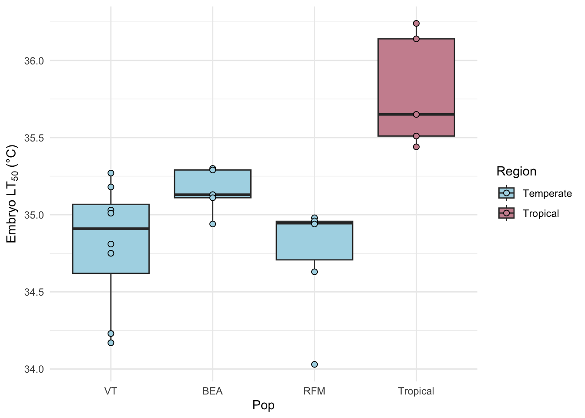
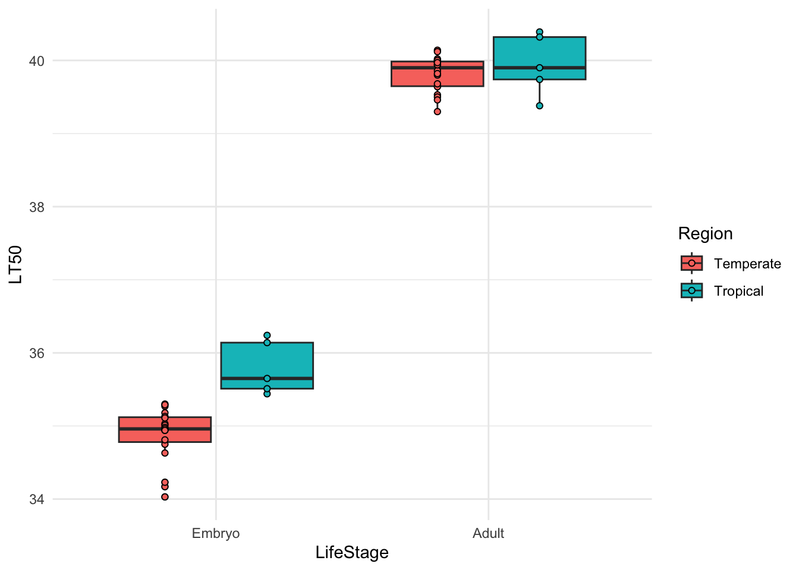
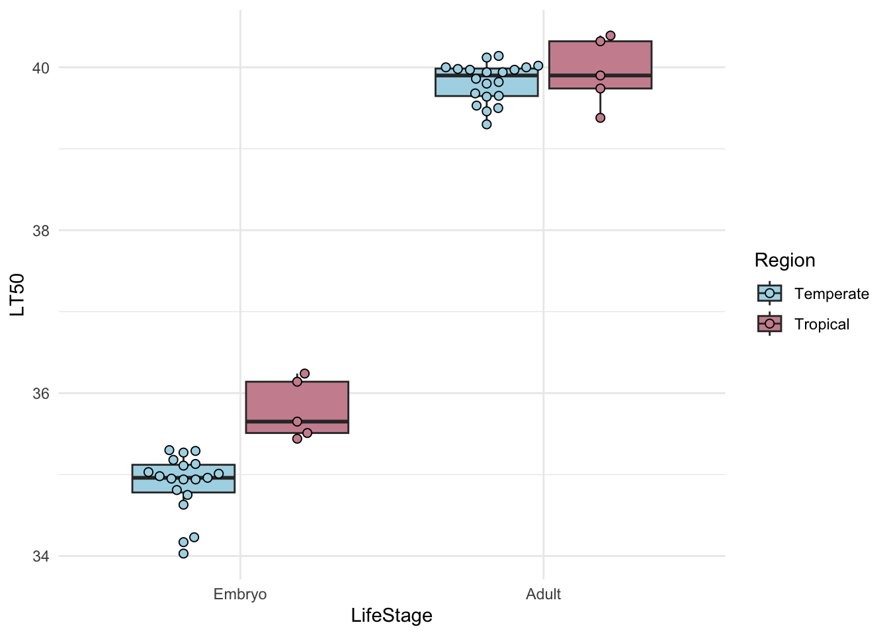
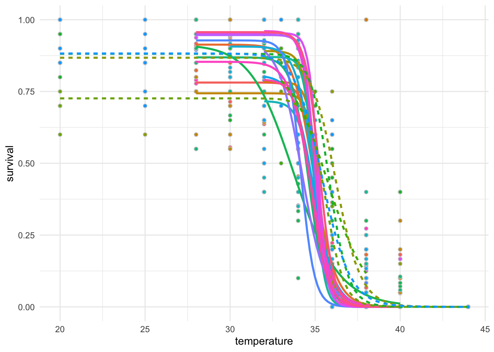
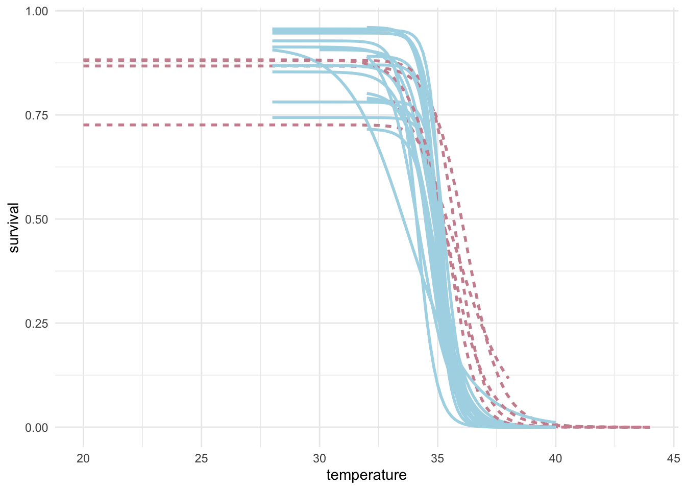

2 Day Two
# ------------------------------------------------------------------------------
# EcoEvo Workshop in R -- Day 2: data analysis & advanced data visualization
# TS O'Leary
# ------------------------------------------------------------------------------
# Load libraries
library(tidyverse)
# Import data
dat <- read_tsv("data/raw/lockwood_et_al_2018_LT50.txt") |>
mutate(Pop = factor(Pop, levels = c("VT", "BEA", "RFM", "Tropical")))## Rows: 25 Columns: 10
## ── Column specification ────────────────────────────────────────────────────────
## Delimiter: "\t"
## chr (5): Stock, Locale, StateCountry, Region, Pop
## dbl (5): Year, Lat, Long, Adult_LT50, Embryo_LT50
##
## ℹ Use `spec()` to retrieve the full column specification for this data.
## ℹ Specify the column types or set `show_col_types = FALSE` to quiet this message.# Change the theme to not have the grey
dat |>
ggplot() +
geom_boxplot(aes(x = Pop,
y = Embryo_LT50,
fill = Region)) +
scale_fill_manual(values = c("lightblue", "pink3")) +
theme_minimal()## Warning: Removed 1 row containing non-finite outside the scale range
## (`stat_boxplot()`).
# Add points
dat |>
ggplot(aes(x = Pop,
y = Embryo_LT50,
fill = Region)) +
geom_boxplot() +
geom_point(shape = 21, size = 2) +
scale_fill_manual(values = c("lightblue", "pink3")) +
scale_y_continuous(name = expression("Embryo LT"[50]*" (°C)")) +
theme_minimal()## Warning: Removed 1 row containing non-finite outside the scale range
## (`stat_boxplot()`).## Warning: Removed 1 row containing missing values or values outside the scale range
## (`geom_point()`).
# Change axis labels
dat |>
ggplot(aes(x = Pop,
y = Embryo_LT50,
fill = Region)) +
geom_boxplot() +
geom_point(shape = 21, size = 2) +
scale_fill_manual(values = c("lightblue", "pink3")) +
scale_y_continuous(name = expression("Embryo LT"[50]*" (°C)")) +
theme_minimal()## Warning: Removed 1 row containing non-finite outside the scale range (`stat_boxplot()`).
## Removed 1 row containing missing values or values outside the scale range
## (`geom_point()`).
## Warning: Removed 1 row containing non-finite outside the scale range (`stat_boxplot()`).
## Removed 1 row containing missing values or values outside the scale range
## (`geom_point()`).## Df Sum Sq Mean Sq F value Pr(>F)
## Pop 3 3.848 1.2827 10.16 0.000282 ***
## Residuals 20 2.526 0.1263
## ---
## Signif. codes: 0 '***' 0.001 '**' 0.01 '*' 0.05 '.' 0.1 ' ' 1
## 1 observation deleted due to missingness# You can also use the broom package to save the results in a data frame
aov(Embryo_LT50 ~ Pop, data = dat) |>
broom::tidy()## # A tibble: 2 × 6
## term df sumsq meansq statistic p.value
## <chr> <dbl> <dbl> <dbl> <dbl> <dbl>
## 1 Pop 3 3.85 1.28 10.2 0.000282
## 2 Residuals 20 2.53 0.126 NA NA# You can also use the TukeyHSD test to see which specific levels of the factor
# in this case what we are calling population groups are different from each other
aov(Embryo_LT50 ~ Pop, data = dat) |>
TukeyHSD() |>
broom::tidy() |>
arrange(adj.p.value)## # A tibble: 6 × 7
## term contrast null.value estimate conf.low conf.high adj.p.value
## <chr> <chr> <dbl> <dbl> <dbl> <dbl> <dbl>
## 1 Pop Tropical-VT 0 0.990 0.423 1.56 0.000481
## 2 Pop Tropical-RFM 0 1.05 0.445 1.65 0.000499
## 3 Pop Tropical-BEA 0 0.642 0.0129 1.27 0.0444
## 4 Pop RFM-BEA 0 -0.406 -1.01 0.197 0.266
## 5 Pop BEA-VT 0 0.348 -0.219 0.915 0.342
## 6 Pop RFM-VT 0 -0.0579 -0.595 0.479 0.990# What if we want to run a two-way ANOVA with Life Stage and Population on LT50
dat_long <- dat |>
pivot_longer(cols = c("Embryo_LT50", "Adult_LT50"),
names_to = "LifeStage",
values_to = "LT50") |>
mutate(LifeStage = str_remove_all(LifeStage, "_LT50")) |>
mutate(LifeStage = factor(LifeStage, levels = c("Embryo", "Adult")))
# Add points
dat_long |>
ggplot(aes(x = LifeStage,
y = LT50,
fill = Region)) +
geom_boxplot() +
geom_point(shape = 21,
position = position_dodge(width = 0.75)) +
theme_minimal()## Warning: Removed 1 row containing non-finite outside the scale range (`stat_boxplot()`).
## Removed 1 row containing missing values or values outside the scale range
## (`geom_point()`).
# A solid plot with all points
dat_long |>
ggplot(aes(x = LifeStage,
y = LT50,
fill = Region)) +
geom_boxplot(outlier.shape = NA) +
ggbeeswarm::geom_beeswarm(shape = 21,
size = 2,
cex = 2,
dodge.width = 0.75) +
scale_fill_manual(values = c("lightblue", "pink3")) +
theme_minimal()## Warning: Removed 1 row containing non-finite outside the scale range (`stat_boxplot()`).
## Removed 1 row containing missing values or values outside the scale range
## (`geom_point()`).
## Warning: Removed 1 row containing non-finite outside the scale range (`stat_boxplot()`).
## Removed 1 row containing missing values or values outside the scale range
## (`geom_point()`).# Two-way ANOVA on Region and Life Stage effect on LT50
lm(LT50 ~ Region*LifeStage, dat = dat_long) |>
car::Anova() |>
broom::tidy()## # A tibble: 4 × 5
## term sumsq df statistic p.value
## <chr> <dbl> <dbl> <dbl> <dbl>
## 1 Region 2.16 1 20.2 4.85e- 5
## 2 LifeStage 279. 1 2609. 1.72e-41
## 3 Region:LifeStage 1.23 1 11.5 1.46e- 3
## 4 Residuals 4.82 45 NA NA# Pair-wise comparison of all groups
lm(LT50 ~ Region*LifeStage, dat = dat_long) |>
emmeans::emmeans(~ Region * LifeStage) |>
pairs(adjust = "tukey") |>
broom::tidy()## # A tibble: 6 × 8
## term contrast null.value estimate std.error df statistic adj.p.value
## <chr> <chr> <dbl> <dbl> <dbl> <dbl> <dbl> <dbl>
## 1 Region*Lif… Tempera… 0 -0.917 0.164 45 -5.57 7.80e- 6
## 2 Region*Lif… Tempera… 0 -4.94 0.105 45 -47.1 2.40e-13
## 3 Region*Lif… Tempera… 0 -5.07 0.164 45 -30.8 2.40e-13
## 4 Region*Lif… Tropica… 0 -4.02 0.164 45 -24.6 2.40e-13
## 5 Region*Lif… Tropica… 0 -4.15 0.207 45 -20.1 2.40e-13
## 6 Region*Lif… Tempera… 0 -0.130 0.164 45 -0.795 8.56e- 1# Survival data we are unlikely to have time to cover --------------------------
# Load data
dat <- read_tsv("data/raw/lockwood_et_al_2018_survival.txt") |>
filter(region %in% c("temperate", "tropical"))## Rows: 933 Columns: 6
## ── Column specification ────────────────────────────────────────────────────────
## Delimiter: "\t"
## chr (2): genotype, region
## dbl (4): temperature, eggs, hatched, survival
##
## ℹ Use `spec()` to retrieve the full column specification for this data.
## ℹ Specify the column types or set `show_col_types = FALSE` to quiet this message.# Survival data
dat |>
ggplot(aes(y = survival,
x = temperature,
fill = genotype,
color = genotype)) +
geom_point(shape = 21, color = "grey80") +
geom_smooth(aes(linetype = region),
method = drc::drm,
method.args = list(fct = drc::LL.3()),
se = FALSE) +
theme_minimal() +
theme(legend.position = "none")## `geom_smooth()` using formula = 'y ~ x'
dat |>
ggplot(aes(y = survival,
x = temperature,
group = genotype,
color = region)) +
geom_smooth(aes(linetype = region),
method = drc::drm,
method.args = list(fct = drc::LL.3()),
se = FALSE) +
scale_color_manual(values = c("lightblue", "pink3")) +
theme_minimal() +
theme(legend.position = "none")## `geom_smooth()` using formula = 'y ~ x'
# Estimate the LT50s for each line
dat |>
group_by(genotype) |>
nest() |>
mutate(fit = map(data, ~ drc::drm(hatched/eggs ~ temperature,
data = .x,
weight = eggs,
fct = drc::LL.3(names = c("slope",
"upper limit",
"LT50")),
type = "binomial"))) |>
mutate(fit_tidy = map(fit, ~broom::tidy(.x))) |>
unnest(fit_tidy) |>
filter(term == "LT50") |>
arrange(desc(estimate))## Warning: There were 47 warnings in `mutate()`.
## The first warning was:
## ℹ In argument: `fit = map(...)`.
## ℹ In group 1: `genotype = "BEA_16"`.
## Caused by warning in `log()`:
## ! NaNs produced
## ℹ Run `dplyr::last_dplyr_warnings()` to see the 46 remaining warnings.## # A tibble: 24 × 9
## # Groups: genotype [24]
## genotype data fit term curve estimate std.error statistic p.value
## <chr> <list> <list> <chr> <chr> <dbl> <dbl> <dbl> <dbl>
## 1 MU <tibble> <drc> LT50 (Interce… 36.5 0.234 156. 0
## 2 CH <tibble> <drc> LT50 (Interce… 36.3 0.144 253. 0
## 3 GU <tibble> <drc> LT50 (Interce… 35.8 0.497 72.1 0
## 4 SK <tibble> <drc> LT50 (Interce… 35.6 0.131 272. 0
## 5 GH <tibble> <drc> LT50 (Interce… 35.6 0.149 239. 0
## 6 BEA_36 <tibble> <drc> LT50 (Interce… 35.4 0.175 203. 0
## 7 VTECK_9 <tibble> <drc> LT50 (Interce… 35.3 0.151 235. 0
## 8 VTECK_2 <tibble> <drc> LT50 (Interce… 35.3 0.142 249. 0
## 9 RFM_48 <tibble> <drc> LT50 (Interce… 35.2 0.196 179. 0
## 10 VTECK_14 <tibble> <drc> LT50 (Interce… 35.2 0.136 258. 0
## # ℹ 14 more rows